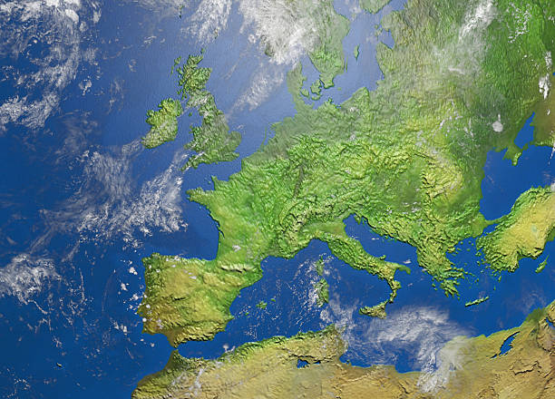

Europa alberga una gran diversidad de hábitats que incluyen bosques, montañas y tundras.
El lobo europeo es un depredador clave en los ecosistemas europeos.
El lobo europeo es un símbolo de fuerza y resiliencia en Europa. Vive en bosques y montañas, donde forma manadas organizadas para cazar presas como ciervos y jabalíes. Aunque históricamente fue perseguido, su población ha comenzado a recuperarse gracias a programas de conservación.
Uno de los mamíferos más grandes de Europa.
El oso pardo es un mamífero imponente que habita en áreas montañosas y bosques densos. Es un animal omnívoro, cuya dieta incluye frutas, raíces, insectos y ocasionalmente carne. Su capacidad para adaptarse a diferentes hábitats lo convierte en una especie emblemática.
Un símbolo de la fauna europea.
El ciervo rojo es conocido por su imponente cornamenta, que los machos desarrollan cada año. Habita en bosques y praderas, donde se alimenta principalmente de hierba y hojas. Es una especie clave en los ecosistemas europeos debido a su papel en la dispersión de semillas.